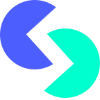
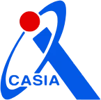
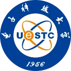
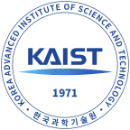

Agent Hub Community
一个讨论 LLM Agent 研究与工程的中文社群
成员主要是国内外一线基模团队中做 Agent 的研究员，以及学术界的青年教授和博士。大家在群里分享自己的工作，追问细节，也交换各自的判断。
- 邀请制
- 四个群
- 每日日报
成员来自这些团队和高校




01我们是谁
汇集一线团队的研究员和学界的研究者
Agent Hub 致力于在 LLM Agent 领域做技术分享和讨论。成员大多在一线基模团队从事 Agent 相关研究，另有一批高校的青年教授和博士。
我们也在持续邀请自然科学领域的跨界学者，围绕 RSI、AI4Science、AI Safety 这些问题和大家碰撞观点。
群里最近在聊什么
在日报里看完整讨论 →02常聊的话题
- RSI模型能不能改进自己，瓶颈在数据、eval 还是训练诊断。
- Agent harness模型越来越强，harness 该加重还是减轻。
- AI4Science和数学、物理等领域的学者一起看 agent 能在科研里做什么。
- AI Safety能力上去之后，control 和 eval 怎么跟上。
- Eval 与 RLBenchmark 还测不测得准，RL 训练和 inference 效率的工程细节。
- Paper 与项目成员分享自己或同行的新工作，群里当场追问细节。
03社群约定
- 面向从事 Agent 研究和工程的技术人员，由现有成员邀请加入。
- 讨论以技术为主，欢迎带着证据和不同意见来。
- 分享自己的工作，也认真看别人的工作。
04接下来想做的
欢迎在群里提议，或者一起组织。
- Topic talk围绕一个具体问题的线上分享和讨论。
- 经历分享请成员聊聊做研究、找工作或创业的经历。
- 线下 coffee chat几个关心同一话题的人约着见面聊，北京优先。
- 交叉学科交流邀请 AI 之外领域的研究者一起讨论。
06一起共建
欢迎其他社区和个人一起办活动、做内容，也欢迎来帮忙管理社群。
加入 Agent Hub
Agent Hub 由现有成员邀请加入。如果你在做 Agent 相关的研究或工程，可以请认识的群友推荐。合作和共建可以通过 GitHub 联系我们。